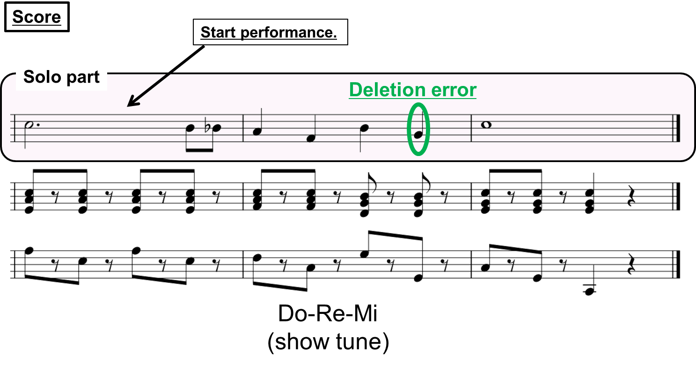
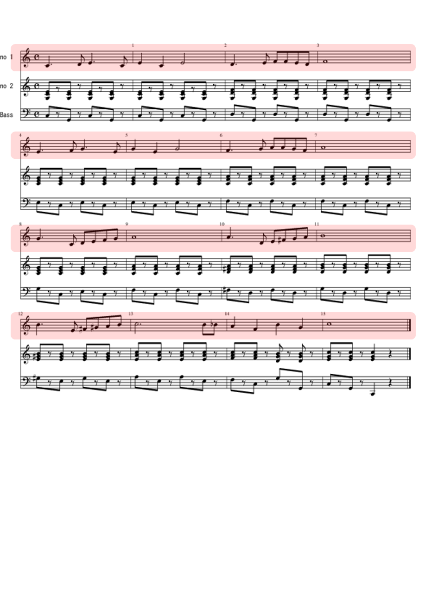

Acoustic Automatic Accompaniment System for Musical Performance with Errors and Arbitrary Repeats and Skips
We propose a system that can synchronize musical accompaniment automatically to a human performance with insertion/deletion/substitution errors and arbitrary repeats/skips in real time [1].
Accompanying to Human Performance during Practice
Accompanying to Human Performance with a deletion error

Accompanying to Human Performance during practice
- A Repeat and tempo changes
- Some Repeats
- Many Errors and Repeats in short time (00:39 to end)
Whole score: Do-Re-Mi
The parts highlighted in pink are played by the human, and the others are played by the proposed system.

Reference
-
[1] {{ get_bibentry_html("TNakamura201602IEEEACMTASLP", lang="en") }}